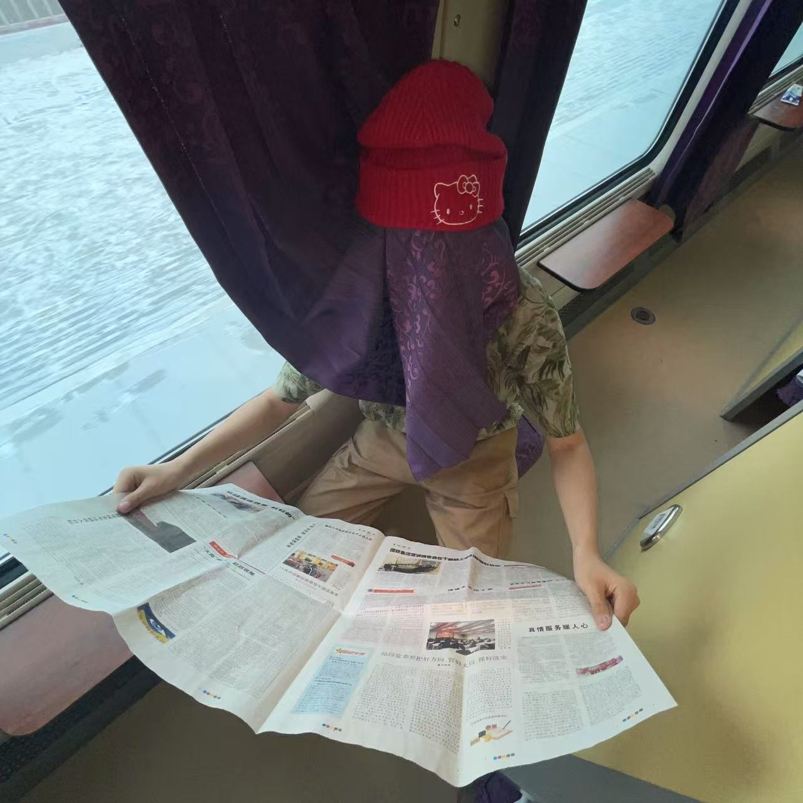

安乐
吃了某？！我是安乐，also Milo An，01 年，ENP 属性的白羊座，这里保存着我的写作、摄影和一些生活记录。
我热衷于奇思妙想的创意并打磨实现它们。我希望开发实用工具，帮助自己和他人提升效率，让生活回归到人本身。我正在努力构建自己的生活方式。 我认为最主要的任务就是“玩儿”，思考自己真正想玩的是什么，而不是能够赚钱。我相信抱着玩儿的心态才能做好一件事，也能赚到钱！ 很多东西是生长出来的而不是设计出来的，现在只是时机未到，切勿短视磨灭英雄志气！
我有时会撰写些文章，也会持续整理摄影与个人项目。
创作之余，我热爱运动、摄影与旅行，羽毛球是硕士期间的最爱，我想要体验棒球、高尔夫与舞蹈，我认为我肢体协调，同时擅长视觉运动。相信你可以在上方找到我的摄影作品。我同样喜欢文学与影视作品，也喜欢文学与影视作品。另外，我正在学习乐器，目标是每年学一种新乐器。
所以相信你能发现，我是一个追求长期主义的人。十年之后，我仍然会想要看美丽的风景，跋山涉水，雪山湖泊，领略自然风光；十年之后，我还会喜欢音乐，体验不同乐器带来的美感；十年之后，我还会使用 AI 去创造去实现；十年之后，我还会喜欢竞技运动，进行各种球类运动，体验运动带来的酣畅淋漓与竞技合作挑战精神；十年之后，我还会喜欢人与人之间真诚的对谈，不同地区文化思维背景的碰撞；十年之后，我还会喜欢记录，用图像，声音，文字刻下我正在经历的点点滴滴，颓废也好，风采也好，真实的记录。
人要从喜欢里面得到快乐与力量，而不是花光所有的力量和快乐去喜欢。
